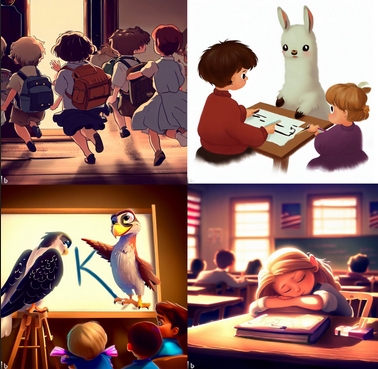

Une liste des infolettres, le mail sur l’actualité interne du réseau.
Infolettre du mois de janvier 2026
Infolettre du mois de décembre 2025
Infolettre du mois d’octobre 2025
Infolettre du mois de Septembre 2025
Infolettre du mois de Mars 2024
Infolettre du mois de Février 2024
Infolettre du mois de Décembre 2023

Infolettre de rentrée, Septembre 2023
Infolettre estivale, Juillet 2023
Infolettre du mois d’Avril 2023
Infolettre du mois de Mars 2023, deuxième quinzaine
Infolettre du mois de Mars 2023
Infolettre du mois de Février 2023
Infolettre du mois de Janvier 2023
Infolettre du mois de Décembre 2022
Les infolettres et lettres Big Data antérieures 👵👴, avant la publication sous forme de blog